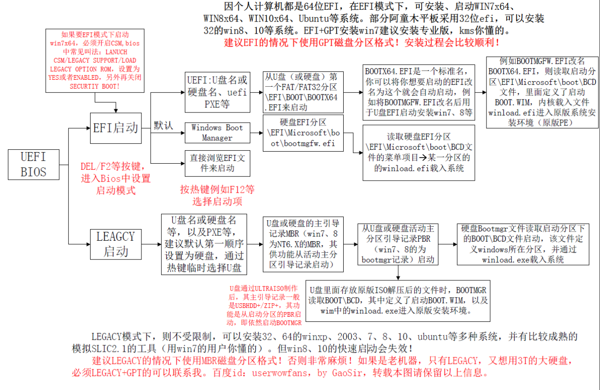
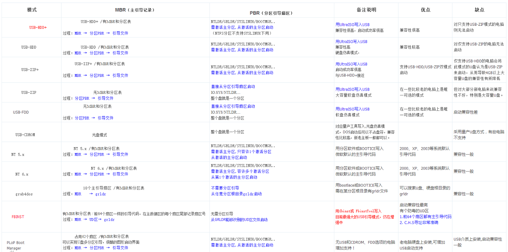
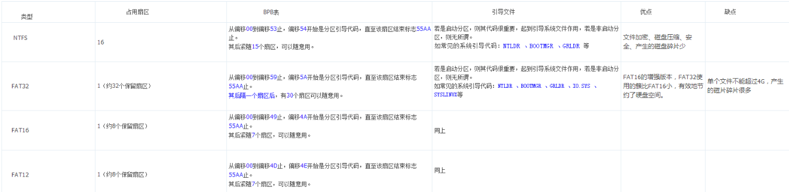
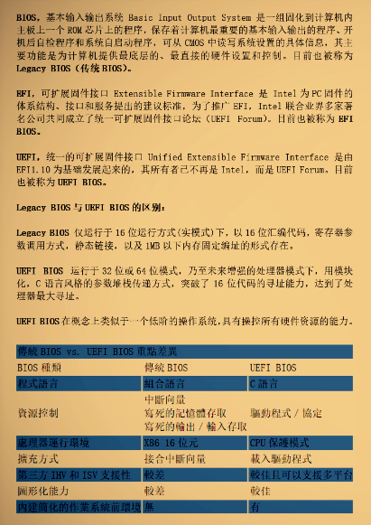
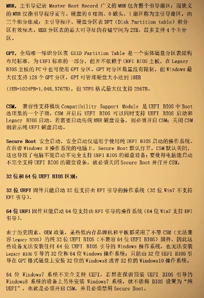
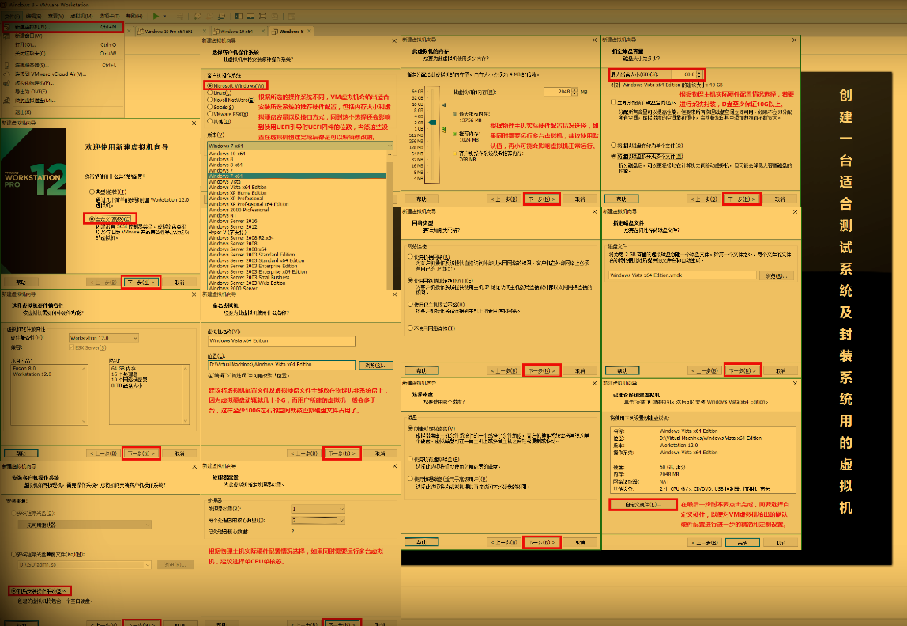

关于ISO、WIM、GHO三者的正确理解。
ISO(Isolation)文件一般以ISO为扩展名，是复制光盘上全部信息而形成的镜像文件。
WIM是英文Microsoft Windows Imaging Format(WIM)的简称，它是Windows基于文件的映像格式。WIM 映像格式并非现在相当常见的基于扇区的映像格式，它是基于文件的。WIM 文件存储一个或多个操作系统的副本（称为映像）。可以在未启动操作系统的情况下，离线添加和删除驱动程序、更新内容以及 Windows 组件。
GHO是Ghost工具软件的镜像文件存放扩展名，Gho文件中是使用Ghost软件备份的硬盘分区或整个硬盘的所有文件信息。.gho文件可以直接安装系统，并不需要解压。Ghost是赛门铁克公司推出的一个用于系统、数据备份与恢复的工具。
关于BIOS、UEFI、MBR、GPT四者的正确理解。
BIOS（Basic Input Output System）全称"基本输入输出系统"。它是一组固化到计算机内主板上一个ROM芯片上的程序，它保存着计算机最重要的基本输入输出的程序、开机后自检程序和系统自启动程序，它可从CMOS中读写系统设置的具体信息。 其主要功能是为计算机提供最底层的、最直接的硬件设置和控制。
UEFI（Unified Extensible Firmware Interface）全称“统一的可扩展固件接口”， 是一种详细描述全新类型接口的标准。这种接口用于操作系统自动从预启动的操作环境，加载到一种操作系统上，从而使开机程序化繁为简，节省时间。可扩展固件接口（Extensible Firmware Interface，EFI）是 Intel 为 PC 固件的体系结构、接口和服务提出的建议标准。其主要目的是为了提供一组在 OS 加载之前（启动前）在所有平台上一致的、正确指定的启动服务。传统BIOS主要支持MBR引导，UEFI则是取代传统BIOS，它加入了对新硬件的支持，其中就有2TB以上硬盘。
MBR（Master Boot Record），即硬盘的主引导记录。为了便于理解，一般将MBR分为广义和狭义两种：广义的MBR包含整个扇区（引导程序、分区表及分隔标识），也就是上面所说的主引导记录；而狭义的MBR仅指引导程序而言。
GPT（GUID Partition Table），即全局唯一标识分区列表，是一个物理硬盘的分区结构。它用来替代BIOS中的主引导记录分区表（MBR）。它是可扩展固件接口（EFI）标准（被Intel用于替代个人计算机的BIOS）的一部分，被用于替代BIOS系统中的一32bits来存储逻辑块地址和大小信息的主开机纪录（MBR）分区表。
安装微PE工具箱产生的文件介绍：
WEPE.TXT - 微PE工具箱说明文档。
WALLPAPER.JPG － 若存在则为自定义PE桌面壁纸文件。
WEPE.INI － 外置程序的配置文件，可以对PE桌面、开始菜单等进行配置。
Res目录 - 若存在，则为放置硬盘安装后保存的引导工具
WEPE64.WIM - WINPE的镜像文件，32位的是WEPE32.WIM。
B64 - BCD文件，32位的是B32。
WEPE64 - 原名 BOOTMGR，32位的是WEPE32。
WEPE.SDI - 原名 BOOT.SDI
WEIPE - GRUB4DOS的引导文件GRLDR
PELOAD - 用来启动WEIPE
MAXDOS.IMG - MAXDOS的镜像文件
WEPE.INI - GRUB4DOS菜单
MESSAGE - GRUB4DOS背景文件
微PE安装到优盘卸载方法：
当安装方式为方法一四五的时候，会在根目录下面放置一个WEPE文件夹一个EFI文件夹和一个BOOTMGR文件。当安装方式为方法二的时候，会出现一个WEPE文件夹一个EFI文件夹和一个BOOTMGR文件。这些文件都是隐藏的，删除这些文件或格式化U盘即可删除PE。方法三安装到隐藏分区，在U盘根目录不会出现任何文件，若需要删除方法三安装的PE，只需用方法一二四五重新制作一次PE后手动格式化即可。
1、UEFI/Legacy全能启动方式：支持两种引导，为官方推荐
2、GRUB4DOS启动方式：不写入隐藏分区，U盘只留一个分区。基本原理是将写入GRUB4DOS的MBR到U盘，使得U盘在启动时直接进入GRUB4DOS的菜单。
3、写入到隐藏分区的Fbinst方式：利用Fbinst技术将PE写入隐藏分区启动，以达到防止格式化时PE被删除的情况，称作UD法。若您想卸载这种方法所产生的隐藏分区，可以使用本工具箱的方法一三四五重新格式化安装一遍。
4、UltraISO的U+启动方式：不写入隐藏分区，和方法二相似，只是这个方法将MBR写成USB-HDD+或USB-ZIP+，PBR写成NT6.X。
5、Windows NT 6.X启动方式：MBR和PBR为NT6.X。如果不用DOS，进入PE时不经过GRUB的菜单，不能进入PE的风险下降了。
【多分区多启动】
1.单分区法：U盘可见区保持fat格式，8PE×64直接散开放在可见区。本方案致命的是，UEFI方面，大于4G的U盘，只能格式化为fat32，UEFI兼容性比fat16要低一些。参考微软硬盘上的ESP分区都是fat16，而不是fat32。同时，UEFI区是可见的，安全性太低。BIOS方面，不采用多重引导如UD主引导或U+V2主引导，有些老机器无法启动。
2.双分区法：U盘分两区，前端为UD区，后端为标准的fat可见区，在可见区里放一个支持efi的64位8PE，这样就可以达到UEFI/BIOS双启，但不足之处同单分区法。
双分区法还有一个U+V2高端隐藏，把数据区格式化为exfat格式，理论上uefi兼容性达百分之百，但考虑到高端隐藏不如低端的UD强，BIOS兼容性比UD法差一些。
3.(ud)三分区法：把内核打包03PE、8PEx32和DOS部署物理低端UD区，中间数据区格式为exfat并保持可见，8PEx64散开高端隐藏于fat16格式磁盘并激活。理论上，这种改进的高端隐藏EFI兼容性最好，UD对BIOS超强兼容性，基本达到双启百分之百兼容。
UD三分区=UD区+exfat或ntfs格式的激活的可见data区+fat格式的隐藏高端efi区
简化三分区法，位于物理低端的UD隐藏区只放置grldr用于BIOS启动，物理中端的数据区保持为exfat或ntfs格式，其它PE文件全部放置于高端隐藏的fat16格式的efi区。
增强三分区法，制作时强制U盘扇区对齐，提高读写效率。
UD分区表项法： UD部署于物理，把UD区的8PEx64映射为低端隐藏的fat16区的uefi启动区，数据区放在物理高端并保持可见。默认情况兼容差一小点，但可以把efi区临时设为可见，达到与三区法相一致的UEFI兼容性。
【更多术语解释说明】
U+——指用ultraiso把PE写入U盘制作启动盘的方式，目前兼容性好的是U+V2
UD——是使用bean制作的fbinst在磁盘上产生的一个抹掉分区表的隐藏分区，制作PE启动盘的方式。
物理分区顺序——就是用分区软件如dg或分区助手查看到的物理实际分区顺序
软件分区顺序——就是用bootice的分区管理查看到的软件分区顺序，抹掉分区表项的深度隐藏分区UD区看不到。
低端隐藏：EFI或PE区放在U盘物理低端，而数据区放在物理高端，并给数据区分配盘符设置为可见（分区表项中，数据区可见在低端也叫前端，efi区不可见区在高端也叫后端，就是bootice显示的前后顺序；而物理高低端我们可以用分区工具如磁盘管理、diskgenuis和分区助手看到，下同）；
高端隐藏：EFI或PE区放在U盘物理高端，而数据区放在物理低端，并给数据区分配盘符设置为可见（分区表项中，数据区可见在高端，efi区不可见区在低端，就是bootice显示的前后顺序）。
【各种USB启动模式】
1、USB-HDD：（占用1个扇区）硬盘仿真模式，DOS启动后显示C:盘，兼容性很高，但对于一些只支持USB-ZIP模式的电脑则无法启动
常见引导过程为：MBR → 分区PBR → 引导文件（如：XP的NTLDR，VISTA的BOOTMGR ，GRUB的GRLDR。）
2、USB-HDD+：（占用1个扇区）增强的USB-HDD模式，DOS启动后显示C:盘，兼容性极高。其缺点在于对仅支持USB-ZIP的电脑无法启动
引导过程为：MBR → 分区PBR → 引导文件
3、USB-ZIP：大容量软盘仿真模式，DOS启动后显示A盘，此模式在一些比较老的电脑上是唯一可选的模式，但对大部分新电脑来说兼容性不好，特别是大容量U盘。
引导过程为：分区PBR → 引导文件
4、USB-ZIP+：：（占用1个扇区）增强的USB-ZIP模式，支持USB-HDD/USB-ZIP双模式启动(根据电脑的不同，有些BIOS在DOS启动后可能显示C:盘，有些BIOS在DOS启动后可能显示A:盘)，从而达到很高的兼容性。其缺点在于有些支持USB-HDD的电脑会将此模式的U盘认为是USB-ZIP来启动，从而导致4GB以上大容量U盘的兼容性有所降低。
引导过程为：MBR → 分区PBR → 引导文件
5、 USB-FDD: 是指把U盘模拟成软驱模式，启动后U盘的盘符是A:
引导过程为：分区PBR → 引导文件
6、USB-CDROM：光盘仿真模式，DOS启动后可以不占盘符，兼容性比较高，新老主板一般都可以。优点可以像光盘一样使用(如进行系统安装)。制作时一般需要具体U盘型号/批号所对应的量产工具来制作。
7、FBINST:
（占用64个扇区）FBINST
在MBR的每个扇区（前64扇区）都写入了引导代码，并在每个扇区记录扇区号，这样无论U盘被识别为何种格式，都可以正常启动，启动的时候需要在1~64扇区读取计算好的信息，电脑就可以迅速而正确地获得参数，从而引导UD区的GRLDR，使得电脑正常启动。
引导过程为：MBR → UD区 → 引导文件
8、GRUB4DOS：（占用18个扇区，老版本占用16个扇区）是强大的引导程序，可以安装在MBR ，也可以安装在分区 PBR ，若安装在MBR，则可以搜索所有分区，启动其指定文件-GRLDR（不需读入分区PBR），从而正常启动。
引导过程为：MBR → grldr
9、NT 5.x: （占用1个扇区）此MBR依然是从激活的主分区启动，遇到多个激活分区就报分区表错误。
引导过程为：MBR → 分区PBR → 引导文件
10、NT 6.x： （占用1个扇区）此MBR依然是从激活的主分区启动，支持多个激活分区，从第一个激活分区启动。
引导过程为：MBR → 分区PBR → 引导文件
11、PLoP
Boot Manager（占用62个扇区）支持 USB 磁盘启动，其一是从USB介质上启动，也能转入到USB介质启动（无论 BIOS 是否支持
USB 启动）。从开发日志上看，对于 EHCI/OHCI/UHCI 三种接口是都支持的，但外接 USB HUB 还不支持。
引导过程为：MBR → 分区PBR → 引导文件
各种模式兼容性顺序（由强到弱）：1. fbinst 2. USB-HDD+ 3. USB-ZIP+ 4. USB-CDROM 5. USB-HDD 6. USB-ZIP 7. USB-FDD/NT5/6/GRUB/PLOP
BIOS下的启动过程：
加电自检->按顺序尝试启动项->主引导记录（mbr）->分区引导记录（pbr）->启动管理器（bootmgr）->配置文件（bcd）->winload.exe->ntoskrnl.exe->注册表
UEFI下的启动过程：
加电初始化->efi shell->启动管理器（*.efi）->配置文件（bcd）->winload.efi->ntoskrnl.exe->注册表
UEFI BIOS→ESP分区→\efi\Microsoft\boot\bootmgfw.efi→efi\Microsoft\Boot\BCD→\Windows\system32\winload.efi→加载内核启动系统
【PE相关】
【内置变量名称与含义】
%Favorites% 收藏夹目录
%Desktop% 桌面目录
%StartMenu% 开始菜单目录
%Startup% 启动菜单目录
%Programs% 程序菜单目录
%SendTo% 发送到目录
%Personal% 我的文档目录
%QuickLaunch% 快速启动目录
%CurDrv% 当前驱动器盘符
【命令指引解释】
EXEC 负责运行后缀名为exe、bat、cmd等可执行文件。
LOAD 负责加载后缀名为ini的配置文件。
LINK 负责创建快捷方式，它负责的文件类型很多。
【注意事项】
菜单条目每条分别占一行；注释内容以//打头。
PE支持四种外置软件包格式：wim、7z、zip、rar。
制作完PE没有文件是因为部署了三分区
三分区指的是，
UD分区，用于BIOS启动。
数据区，存放个人文件。
深度隐藏区，支持UEFI启动。
当BIOS启动时，默认启动UD区PE。
当UEFI启动时，默认启动U深区PE（ISO）。
其中UDPE和ISOPE都为独立版本，可以分开安装使用。
UEFI启动时会自动挂载UD区软件。

1. MBR分区表：Master Boot Record，即硬盘主引导记录分区表，只支持容量在2.1TB 以下的硬盘，最多只支持4个主分区或三个主分区和一个扩展分区，扩展分区下可以有多个逻辑分区。
2. GPT分区表：GPT，全局唯一标识分区表(GUID Partition Table)，与MBR最大4个分区表项的限制相比，GPT对分区数量没有限制，只有基于UEFI平台的主板才支持GPT分区引导启动。
3.
ESP分区：EFI system partition，该分区用于采用了EFI
BIOS的电脑系统，用来启动操作系统。分区内存放引导管理程序、驱动程序、系统维护工具等。如果电脑采用了EFI系统，或当前磁盘用于在EFI平台上启动操作系统，则应建立ESP分区。
4. MSR分区：即微软保留分区，是GPT磁盘上用于保留空间以备用的分区，例如在将磁盘转换为动态磁盘时需要使用这些分区空间。
5.
SECURE BOOT功能：Windows8中增加了一个新的安全功能，Secure Boot内置于UEFI
BIOS中，用来对抗感染MBR、BIOS的恶意软件， Windows 8 缺省将使用Secure
Boot，在启动过程中，任何要加载的模块必须签名(强制的)，UEFI固件会进行验证，没有签名或者无法验证的，将不会加载。



一般UEFI的启动项分两种：
1、“默认”启动项
BIOS中默认的那些"SATA HDD" "USB HDD"启动选项，在UEFI模式下启动系统时会寻找对应设备的ESP分区里的/EFI/Boot/bootx64.efi。你在用u盘装uefi系统的时候就是用的这种方式。
2、注册的启动项
操作系统可以在uefi中注册启动项。比如安装windows，在放置好文件/EFI/Microsoft/Boot/bootmgfw.efi以后会注册一个启动项，BIOS里就会有一个"Windows
Boot
Manager"。grub-install也是先放好文件/EFI/<bootloader-id参数>/grubx64.efi然后注册了一个启动项。这些启动项可以用Windows下的EasyUEFI软件和Linux下的efibootmgr命令进行管理。
清除了CMOS数据就把上述第二类（grub-install等软件注册的启动项）清除掉了，自然就不识别了。
UEFI是32位的，32位8系统以及win10以上都支持
UEFI是64位的，64位7系统以上除32位都全支持
现在新出台式机、笔记本多数取用新型主板，支持UEFI启动+Legacybios启动，UEFI固件绝大部分是64位。而平板电脑绝大部分UEFI固件32位，而且不支持Legacybios启动，这些平板只能UEFI启动安装8/8.1/10的32位系统.
32位efi固件目前只有平板电脑上有，笔记本和台式机暂未发现。
grub2支持UEFI启动，grub4dos不支持。



引导菜单常用命令解释
title Boot -------定义菜单名称
kernel ------指定memdisk内核
initrd ------memdisk引导img镜像功能
map --mem ------ (grub4dos自带的仿真功能，仿真成软盘0)
map (fd0) (fd1)---- (将软盘0仿真成软盘1, 这是为了当系统存在物理软驱,或者U盘以zip方式启动后, 可以访问物理软驱和U盘, 以盘符B:来访问)
map --floppies=2---- (定义仿真磁盘数)
map --hook---- (使仿真生效)
chainloader (fd0)+1---- (从软驱0(其实是img仿真的,非物理软驱0)的第一扇区启动)
rootnoverify (fd0)---- (设置根为软驱0)
boot---- (启动系统)
软盘镜像仿真成FD0
硬盘镜像仿真成HD0
提示：efi启动的iso，如果是用微软的打包工具oscdimg，ultraiso编程后不会丢失efi启动轨迹；而用非微软的打包工具mkisofs打包成grub/efi双启，用ultraiso编辑Iso会丢失efi启动轨迹。
【GRUB启动命令详解】
一、菜单命令
菜单命令只能用于grub配置文件的全局配置部分，不能用在grub命令行交互界面，菜单命令在配置文件中应放在其它命令之前。
1、default //设置默认启动的菜单项
2、fallback //设置启动某菜单项失败后反回的菜单项
3、hiddenmenu //隐藏菜单界面
4、timeout //设置菜单自动启动的延时时间
5、title //开始一个菜单项
二、常规命令
常规命令可以应该于配置文件和grub命令行交互界面，可使用的常规命令有
1、bootp //通过bootp初始化网络设备
2、color //设置菜单界面的颜色
3、device //指定设备文件作为驱动器
4、dhcp //通过DHCP初始化网络设备
5、hide //隐藏某分区
6、ifconfig //手工配置网络设备
7、pager //改变内部页程序的状态
8、partnew //新建一个主分区
9、parttype //改变分区的类型
10、password 为菜单界面设置口令
11、rarp //通过RARP初始化网络设置
12、serial //设置串口设备
13、setkey //设置键盘映射
14、splashimage //设置GRUB启动时的背景图片文件
15、termainal //选择终端类型
16、tftpserver //指定TFTP服务器
17、unhide //还原某隐藏分区
三、命令行和菜单项命令
命令行和菜单项命令可应该于GRUB配置文件的菜单项设置中，也可以用在GRUB命令交互界面。
1、bolcklist //显示某文件所在分区位置（block list notation）
2、boot //启动操作系统
3、cat //显示文件内容
4、chainloader //把启动控制权软交给另外的启动引导器
5、cmp //比较两个文件
6、configfile //加载已存在的GRUB配置文件
7、debug //设置为debug模式
8、displayapm //显示APM BIOS信息
9、displaymem //显示内存配置
10、embed //嵌入Stage 1.5文件
11、find //查找包括某文件的所有设备
12、fstest //测试文件系统
13、geometry //显示某驱动器的物理信息
14、halt //停止计算机运行（软件关机）
15、help //显示GRUB的命令帮助信息
16、impsprobe //查询对称多处理器（SMP）的信息
17、initrd //加载initrd文件
18、install //安装GRUB
19、ioprobe //查询某驱动器的输入输出（I/O）端口
20、kernel //引导操作系统内核
21、lock //锁定某GRUB导菜单项，使其输入密码后才可启动
22、makeactive //激活某主分区
23、map //虚拟映射某驱动器
24、md5crypt //使用MD5加密口令
25、module //加载模块
26、modulenounzip //加载模块不进行解压
27、pause //暂停并等待按键
28、quit //退出GRUB
29、reboot //重新启动计算机
30、read //读取内存中的内容
31、root //设置GRUB的root设备
32、rootnoverify //设备GRUB的root设备但不装载文件系统
33、savedefault //保存当前的启动菜单项为默认启动
34、setup //自动安装GRUB
35、testload //从文件系统中测试读取某文件
36、testvbe //测试VESA BIOS EXTENSION
37、uppermem //强制设置主机上位内存的大小
38、vbeprobe //查询VESA BIOS EXTENSION信息